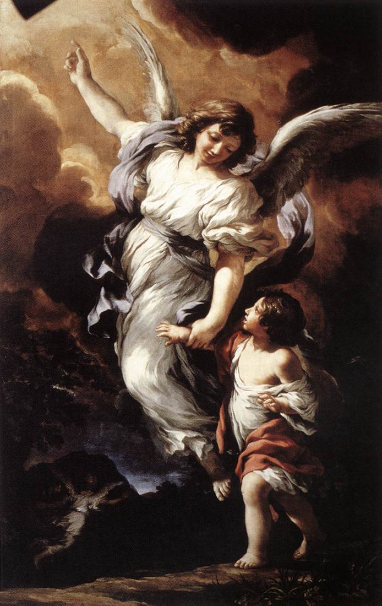

Krachtig Beschermengelgebed

Krachtig Beschermengelgebed
Heilige Beschermengel, ik vraag u om uw hulp. Leid, richt, begeleid, heilig, zegen, bescherm en bestuur mij; bid en voorspreek voor mij.
Vernietig in de Naam van de Allerheiligste Drievuldigheid alle satanische vervloekingen, verwensingen, bezweringen en helse aanslagen tegen mij. Wijd mij aan de Verenigde Harten van Jezus en Maria, dompel mij onder in het Kostbaar Bloed van Jezus, leg mij in de heilige Wonden van Jezus, richt een beschermmuur op met het Kostbaar Bloed van Jezus rondom mij en bedek mij met het schild van de Onbevlekte Ontvangenis.
Werp in de Naam van de Allerheiligste Drievuldigheid alle demonen die mij kwaad willen doen in de helse afgrond, en bind hen voor tijd en eeuwigheid door onze gekruisigde en zegevierend verrezen Verlosser. Moge de Almachtige en Drie-enige God, de † Vader, de † Zoon en de † Heilige Geest, mij dit verlenen van nu tot in eeuwigheid, en moge de moederlijke bescherming van de Koningin des Hemels op mij neerdalen en altijd bij mij blijven. Amen.
Blijf u ervan bewust dat van de wieg tot het graf een hemelse geest naast ons is die ons geen moment verlaat, die ons als een vriend of broeder leidt en beschermt, die er altijd is om ons te troosten, vooral in onze droevigste uren. U moet weten dat deze goede engel voor u bidt. Hij biedt God al uw goede werken aan, evenals uw zuivere en heilige verlangens. In de uren dat u zich alleen en verlaten voelt, beklaag u niet dat u geen vriendelijke ziel hebt aan wie u zich zou kunnen openen en uw lijden toevertrouwen. Vergeet om Gods wil deze hemelse metgezel niet, die altijd daar is en klaar om naar u te luisteren, altijd klaar om u te troosten. O kostbare intimiteit! O gezegend gezelschap!
(Uit een brief van de Hl. Padre Pio van 20 april 1920, in: De Engelen door Rene Lejeune, Hauteville/Zwitserland, 1999)